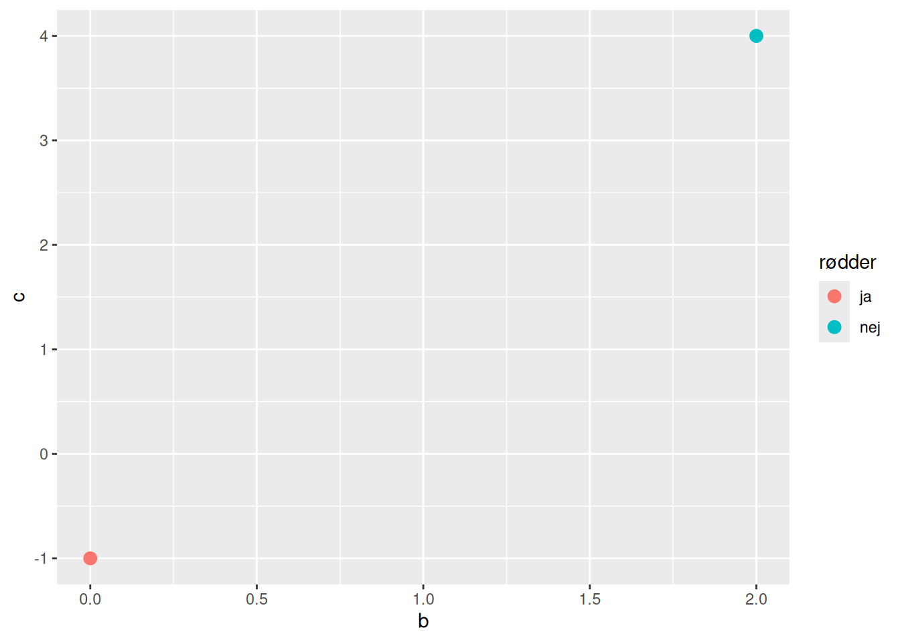

Perceptroner og rødder
Et andengradspolynomium kan have enten ingen, én eller to rødder – og måske kan du ligefrem huske en metode til at bestemme antallet af rødder. Men kan man mon træne en perception, så den kan bestemme antallet af rødder i et andengradspolynomium? Det vil vi undersøge i dette forløb.
Hvad er en perceptron?
I dette forløb skal vi arbejde med perceptoner, og det har du nok aldrig hørt om før! Start derfor med at se videoen herunder, hvor vi kort forklarer, hvad en perceptron er.
Du kan også læse meget mere om perceptroner her.
Andengradspolynomier og rødder
Nu tilbage til vores eksempel om andengradspolynomier og rødder! Lad os for en god ordens skyld minde om, at et andengradspolynomium er en funktion med en forskrift på formen \[ f(x)=ax^2 + bx + c, \quad a \neq 0 \] Grafen for et andengradspolynomium kaldes som bekendt for en parabel. I figur 1 ses tre eksempler på sådanne parabler.

Hvis vi løser andengradsligningen \[ f(x)=ax^2 + bx + c=0 \] finder vi andengradspolynomiets rødder. Men at løse \(f(x)=0\), svarer netop til at bestemme, hvor den tilhørende parabel skærer \(x\)-aksen. I figur 1 kan vi se, at den grønne parabel skærer \(x\)-aksen to steder. Det vil sige, at det tilhørende andengradspolynomium har to rødder. Den røde parabel skærer \(x\)-aksen ét sted – det tilhørende andengradspolynomium har altså én rod. Endelig kan vi se, at den blå parabel slet ikke skærer \(x\)-aksen, og det tilhørende andengradspolynomium har derfor ingen rødder.
Du husker nok, hvordan man bestemmer antallet af rødder i et andengradspolynomium. Vi har brug for diskriminanten \(d\):
\[ d = b^2-4ac \tag{1}\]
Og der gælder så, at \[ \begin{aligned} &d<0: \quad f \textrm{ har ingen rødder} \\ &d=0: \quad f \textrm{ har én rod} \\ &d>0: \quad f \textrm{ har to rødder} \\ \end{aligned} \]
Idéen er nu at undersøge, om det er muligt at få en perceptron til at lære1, om et andengradspolynomium overhovedet har nogle rødder alene ude fra de tre koefficienter \(a\), \(b\) og \(c\) – og helt uden at kende noget til diskriminantformlen i (1)!
1 Det er klart, at der er intet nyt under solen her. Vi kan jo bare selv beregne diskriminanten og svare på spørgsmålet. Men formålet er her at lære lidt om, hvad det vil sige at træne en perceptron i et tilfælde, hvor vi allerede selv kender svaret. Desuden findes der ingen lukkede løsningsformler for at bestemme rødder i et polynomium, så snart graden af polynomiet er \(5\) eller derover. Så idéen kan generaliseres, og så er den måske slet ikke så tosset endda!
Inden vi går i gang, vil vi starte med at indse, at i stedet for at løse ligningen
\[ a x^2 + bx +c = 0 \tag{2}\]
Så kan vi lige så godt løse en ligning på formen
\[ x^2 + bx +c =0 \] hvor altså \(a=1\). Det virker måske som en forsimpling, men da vi har antaget, at \(a \neq 0,\) så kan vi i ligningen i (2) dividere igennem med \(a\) og få
\[ \begin{aligned} \frac{a}{a} x^2 + \frac{b}{a} x + \frac{c}{a} &= \frac{0}{a} \quad \Leftrightarrow \\ x^2 + \frac{b}{a} x + \frac{c}{a} &= 0 \end{aligned} \]
Det betyder, at når vi skal bestemme rødder i andengradspolynomier, så er det tilstrækkeligt, at betragte andengradspolynomier med en forskrift på formen
\[ f(x)=x^2+bx+c \] fordi man simpelthen bare tager sit oprindelige andengradspolynomium og dividerer igennem med \(a\). Lad os illustrere det med et eksempel.
Betragt andengradspolynomiet med forskriften
\[ f(x)=-4x^2+8x+12 \] Her har vi \(a=-4, b=8\) og \(c=12\). Løser vi ligningen \(f(x)=0\), finder vi ud af, at \(f\) har to rødder nemlig \(-1\) og \(3\). Dividerer vi forskriften for \(f\) igennem med \(a=-4\) fås et nyt andengradspolynomium \(g\) med forskrift
\[ g(x)=x^2-2x-3 \] Her er koefficienterne \(a=1, b=-2\) og \(c=-3\). Men \(g\) har præcis samme rødder som \(f\) – nemlig \(-1\) og \(3\). Dette ses også illustreret i figur 2, hvor grafen for \(f\) og \(g\) begge skærer \(x\)-aksen i \(-1\) og \(3\).
Træningsdata
I dette eksempel vil vi nøjes med at se på, hvordan man kan træne en perceptron, så den forhåbentlig kan fortælle os, om et givent andengradspolynomium enten har ingen eller en eller to rødder. Det svarer til, at vi ønsker en perceptron, som for en given parabel kan svare på, om parablen skærer \(x\)-aksen eller ej (og altså ikke hvor mange gange den eventuelt skærer \(x\)-aksen).
For at træne en perceptron, skal perceptronen se en masse eksempler på forskellige andengradspolynomier (det vil her sige med forskellige værdier af \(b\) og \(c\)) samtidig med, at vi fortæller perceptronen, om det tilhørende andengradspolynomium har rødder eller ej. At angive om et polynomium har rødder eller ej kalder man for en targetværdi. Tænk på det som en lille label du sætter på hvert eksempel, hvor du fortæller perceptronen, hvad det rigtige svar er – “det er altså det her, jeg gerne vil have, at du lærer!”. Samlet set kalder man de forskellige eksempler inklusiv targetværdien for træningsdata.
Træning af perceptron
Vi skal nu overveje, hvordan perceptronen kan trænes. Perceptronen gør dybest set det, at den prøver at bestemme en ret linje, som kan bruges til at adskille de røde punkter fra de blå punkter i punktplottet ovenfor. En ret linje i et 2-dimensionalt koordinatsystem har helt generelt en ligning på formen2
2 Du er nok vant til at møde linjens ligning på denne form: \(a \cdot x+b \cdot y+c=0\). Skrivemåden, vi bruger her, er \(w_0+w_1 \cdot x + w_2 \cdot y=0\). Det vil sige i forhold til den skrivemåde, som du kender, så er \(w_0=c, w_1=a\) og \(w_2=b\).
\[ w_0 + w_1 \cdot x + w_2 \cdot y = 0 \] Og for alle punkter på den ene side af linjen gælder, at
\[ w_0 + w_1 \cdot x + w_2 \cdot y > 0 \] og for alle punkter på den anden side, at
\[ w_0 + w_1 \cdot x + w_2 \cdot y < 0 \]
I vores tilfælde har vi \(b\)-værdier ud af \(x\)-aksen og \(c\)-værdier op af \(y\)-aksen. Med de betegnelser bliver ligningen for en ret linje
\[ w_0 + w_1 \cdot b + w_2 \cdot c = 0 \]
Her tænker vi altså på \(b\) og \(c\) som de variable.
Når man træner en perceptron, gør man det ved hjælp af en algoritme, som løbende opdaterer vægtene \(w_0, w_1\) og \(w_2\), så den linje, vægtene giver, bliver bedre og bedre til at adskille de røde punkter fra de blå. Hver gang man opdaterer vægtene, siger man, at algoritmen har foretaget én iteration3.
3 En iteration betyder en gentagelse.
Du kan godt løse resten af opgaverne uden at forstå, hvorfor vægtene opdateres, som de gør. Men hvis du gerne vil have en forklaring så se videoen herunder.
Som du netop har opdaget, er det en umulig opgave, vi har givet perceptronen! Vi kan ikke finde en ret linje, som i alle tilfælde kan bruges til at adskille de to slags punkter. Lad os se på hvorfor. Som tidligere nævnt har vores linje en ligning på formen
\[ w_0 + w_1 \cdot b + w_2 \cdot c = 0 \tag{3}\]
Vi husker nu på formlen for diskriminanten \(d=b^2-4ac=b^2-4c\), da \(a=1\) i vores eksempel. Skillelinjen for om andengradspolynomiet har ingen eller flere rødder, går netop ved \(d=0\). Det vil sige
\[ b^2-4c =0 \tag{4}\]
Men vi kan ikke finde nogle værdier af \(w_0, w_1\) og \(w_2\), så udtrykket i (3) kommer til at svare til udtrykket i (4). Det er fordi, at i (3) indgår der kun et \(b\), mens der i (4) indgår et \(b^2\). Denne observation giver os imidlertid også en løsning på vores problem. I stedet for at fodre perceptroner med forskellige værdier af \(b\) og \(c\), så giver vi den i stedet værdier af \(b^2\) og \(c\)!